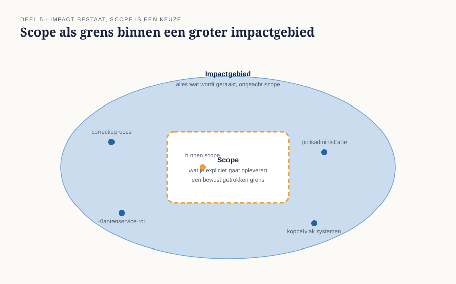
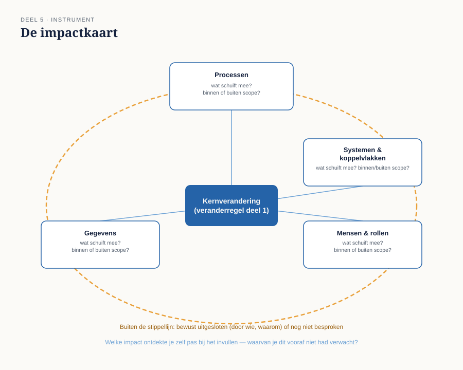

Deel 5 — Verandering: scope, impact, wat er meeschuift
Slidedeck · Ductus-cursus Business-analyse · niveau 1 · deel 5 van 30 · 24 slides
Slide 1 — Titel
Business-analyse — deel 5 Verandering: scope, impact, wat er meeschuift
Slide 2 — Terugblik
Vier delen: een instrument, een denkraam, een houding, een bewuste aanpak.
Vandaag: het eerste kernconcept uit het denkraam, in de diepte.
Slide 3 — Vier op de tien
Na livegang: 22% correcties over afgesloten perioden 9% samenloop van gebeurtenissen 6% werkgevers met meerdere regelingen
Allemaal al bekend bij Uitvoering. Niets in de specificatie.
Slide 4 — Waar we het over gaan hebben
- Scope versus impact
- Vier soorten impact om systematisch na te gaan
- Bewust uitgesloten versus over het hoofd gezien
- De impactkaart · bevinding B5 sluiten
Slide 5 — Scope
Wat je expliciet gaat opleveren. De grens die je met opzet trekt.
Nodig — zonder grens raakt een project stuurloos.
Slide 6 — Impact
Alles wat door de verandering wordt geraakt, ongeacht of het binnen de scope valt.
Impact bestaat onafhankelijk van je keuze. Scope is een keuze.
Slide 7 —

Scope als getrokken grens binnen een groter impactgebied
Slide 8 — Het probleem bij WGP 2.0
Niet dat er een scope werd getrokken.
**Dat de scope werd getrokken zonder eerst de impact in kaart te brengen.**
Slide 9 — Impact op processen
Welke werkprocessen veranderen mee — ook als ze niet het doelwit van de verandering zijn?
Het correctieproces bij Uitvoering: nooit meebewogen.
Slide 10 — Impact op gegevens
Welke gegevens moeten aansluiten, migreren, dubbel bijgehouden?
Samenloopgevallen die het portaal niet kon vastleggen.
Slide 11 — Impact op systemen en koppelvlakken
Welke andere systemen raken dit systeem, en andersom?
De aanname: één regeling per werkgever. De werkelijkheid van Wilma Prins: twee.
Slide 12 — Impact op mensen en rollen
Wiens werk verandert er — ook ongepland?
Klantenservice kreeg een nieuwe taak die niemand toebedeelde: alles opvangen wat het portaal niet aankon.
Slide 13 — [Opdracht 2]
Vier soorten impact, herkennen in de e-mail van Ruud Kalsbeek
Slide 14 — Twee soorten "buiten scope"
Bewust uitgesloten — geconstateerd, besloten, vastgelegd, de belanghebbende weet ervan.
Over het hoofd gezien — nooit benoemd, dus nooit besloten.
Slide 15 — Zelfde uitkomst, ander proces
In beide gevallen valt iets buiten de scope.
Het verschil zit in wat eraan voorafging.
Slide 16 — WGP 2.0: vier van de vier
Correcties, samenloop, meerdere regelingen, de nieuwe taak bij Klantenservice.
Geen van de vier: een besluit, een eigenaar, een reden.
Allemaal over het hoofd gezien.
Slide 17 — De werkvorm van dit deel
De impactkaart
Kernverandering in het midden. Vier impactsoorten eromheen.
Slide 18 — Het blad
Voor elke impactsoort: Wat schuift er mee — concreet, met naam? Binnen de scope, of erbuiten?
Slide 19 — Bij "erbuiten"
Bewust uitgesloten — door wie, waarom, weet de belanghebbende het?
Of: nog niet besproken.
Slide 20 — Het veld dat het verschil maakt
Welke impact ontdekte je pas tijdens het invullen — iets waarvan je vooraf niet dacht dat het hierbij hoorde?
Slide 21 —

De impactkaart — kernverandering, vier impactsoorten, scopegrens
Slide 22 — Het examen
Domein 4 — verandering — 10% Scope en impact onderscheiden · impact herkennen die over het hoofd is gezien · bewust versus onbewust uitsluiten
Slide 23 — B5 gesloten
De kennis ontbrak niet in de organisatie. Niemand kwam haar ophalen.
Slide 24 — Volgende keer
Hoe haal je op wat mensen al weten — en hoe controleer je of het klopt?
Deel 6: behoefte — eliciteren, vastleggen, valideren.